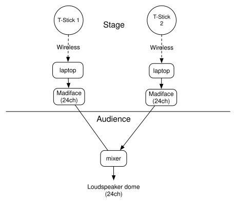
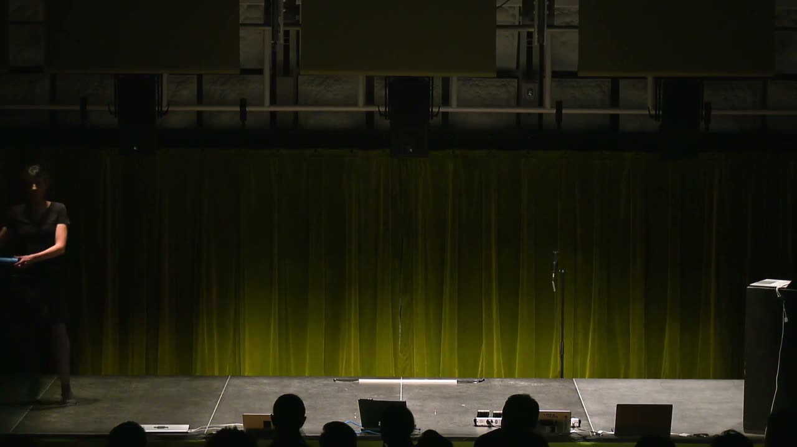

Higher Order Gestalt Fromage
PROJECT DESCRIPTION
We propose a composition entitled Higher Order Gestalt Fromage for two sopranino T-Sticks and 3D surround (2020) with a duration of 13 minutes.
T-Stick is a cylindrical musical interface composed of accelerometers, pressure sensors, a piezoelectric sensor and captive sensors combined with a computer program for gesture acquisitions. Unlike most other gestural controllers, T-Sticks are designed to sense not only raw data from sensors such as angle and acceleration, but also to detect discrete categories of physical gestures such as squeezing, brushing and swinging [1]. This feature opened up a possibility to highlight a causal link from the gestures to electroacoustic sounds.
The proposed piece focuses on the usage of the causal link to address the question: what is it that engenders the sense of “authentic” concert experience? Philippe Auslander asserts that the authentic object for listeners in pop music concerts has changed from performers’ actual musicianship to a simulation of recorded performances that have never existed in the real, but were created with the extensive use of studio production techniques (e.g., lip-syncing on recorded tracks)[2]. Drawing on this historical transition of authenticity in concerts from an actual to fictional performance, our composition proposes the ambiguity between corporeal performance and electroacoustic imagery as a new authentic experience in a concert.
To this end, the piece focuses on a gradual disintegration of the causal link from a gesture to a sound. The piece starts with a state where a single gesture such as jabbing, tilting and swinging causes a single sonic event such as initiation, transition and termination. As the piece unfolds, the causal link is untied through asynchronization between the gesture and the sound in time, and displacement between the performing bodies and sound positions. Finally, the performing bodies vanish from the stage while the T-Sticks autonomously resonate, remaining only the vestige of human performers.
PROGRAM NOTES
What is it that engenders the sense of “authentic” concert experience? Philippe Auslander asserts that the authentic object for listeners in pop music concerts has changed from performers’ actual musicianship to a simulation of recorded performances that have never existed in the real, but were created with the extensive use of studio production techniques (e.g., lip-syncing on recorded tracks). Drawing on this historical transition of authenticity in concerts from an actual to fictional performance, our composition proposes the ambiguity between corporeal performance and electroacoustic imagery as a new authentic experience in a concert.
To this end, the piece focuses on a gradual disintegration of the causal link from a gesture to a sound. The piece starts with a state where a single gesture such as jabbing, tilting and swinging causes a single sonic event such as initiation, transition and termination. As the piece unfolds, the causal link is untied through asynchronization between the gesture and the sound in time, and displacement between the performing bodies and sound positions. Finally, the performing bodies vanish from the stage while the T-Sticks autonomously resonate, remaining only the vestige of human performers. At this point, we authenticate the fictional performance over the actual one as if the unreal is more real than the real – hyperreal.
PERFORMANCE REQUIREMENTS
A 3D loudspeaker array which receives outputs from our two computers on stage*
2 monitor speakers (one for each of us)
2 small very low tables, on which we put our laptops
2 power bars (one for each of us)
*We both stand on stage during the performance.
*Although a hemispheric loudspeaker dome constituting 24 loudspeakers is ideal, we can easily adapt our performance system to the available speaker setup.


MEDIA

▶ACKNOWLEDGEMENTS
The authors would like to thank the CIRMMT and the IDMIL for their generous support for the production of this piece.
Citations
- ↩Malloch, J. W. (2008). A consort of gestural musical controllers: Design, construction, and performance. Most, (February), 77 páginas. Retrieved from http://www.idmil.org/\_media/publications/2007/malloch\_ma\_thesis.pdf
- ↩Auslander, P., & Auslander, P. (2008). Liveness. Routledge. https://doi.org/10.4324/9780203938133